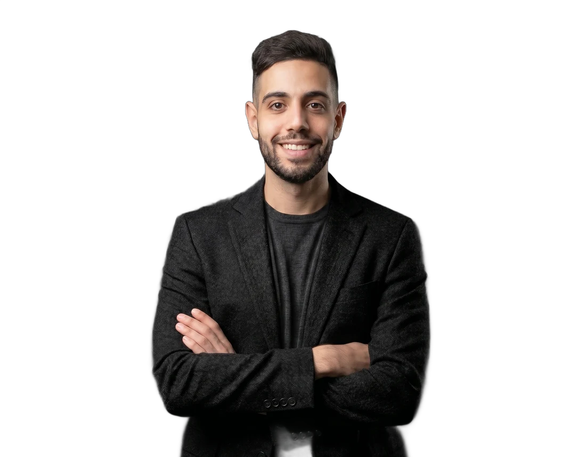

SOC • INCIDENT RESPONSE • DFIR • GRC • ISO 27001 • IAM • MALWARE ANALYSIS • SPLUNK • WAZUH • 侍 •

村長
GRC · SOC · DFIR · IAM
Ahmed
Emad Nasr
Information Security Officer
Incident response · Malware analysis · Compliance
82
case studies
160h
SOC diploma
300+
students
AE
.
Cybersecurity instructor · AMIT & NTI